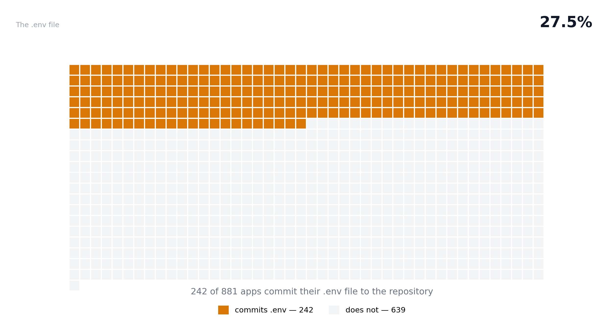

The durable figure presence, not exploitability
A file is either in the repository or it is not. This number
doesn't depend on how the scanner works, what rules it applies, or
what it misses — it's a binary fact. 242 of 881 Lovable apps
commit their .env file to the public GitHub archive.

This is the durable figure. Lovable ships Vite + Supabase apps, so
the typical
.env holds a VITE_ URL and
the anon key — public by design. But 1 in 4 of these files contains
a service-role key, a database credential, or a real secret masked
with a VITE_ prefix that publishes it to every visitor.